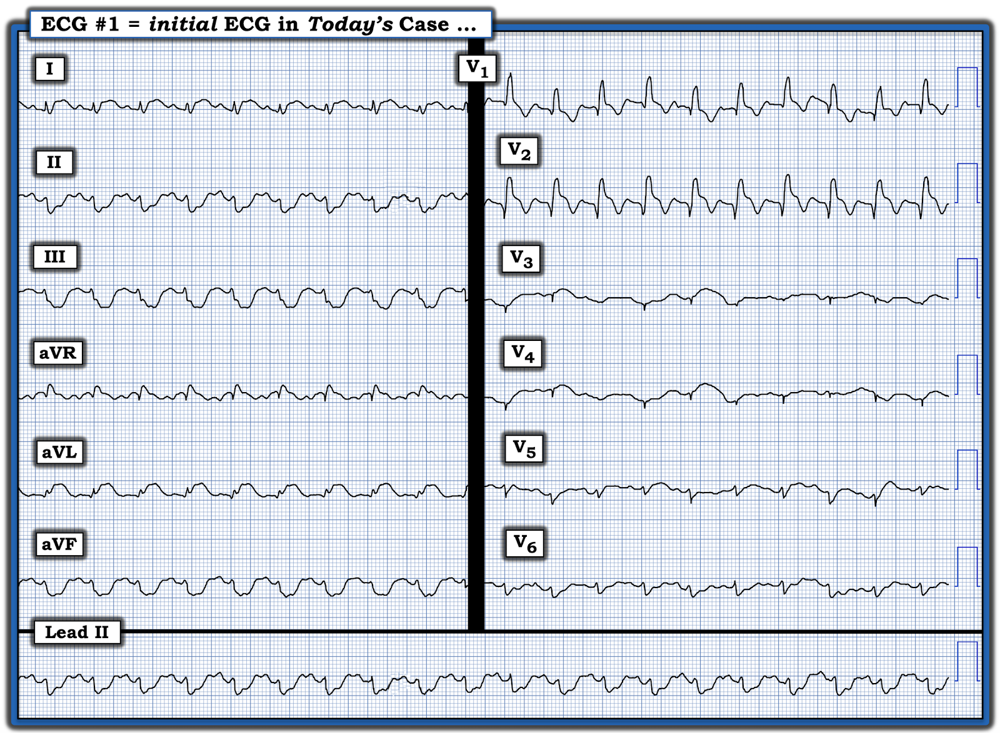
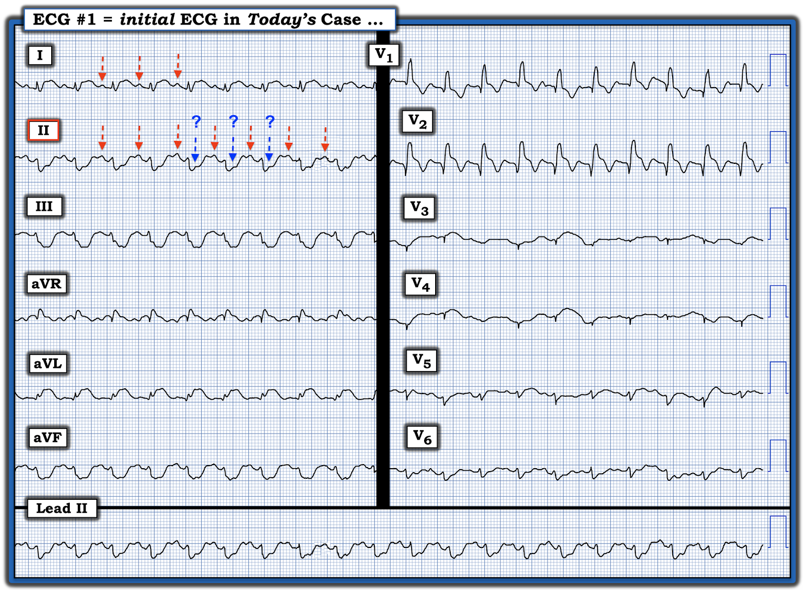
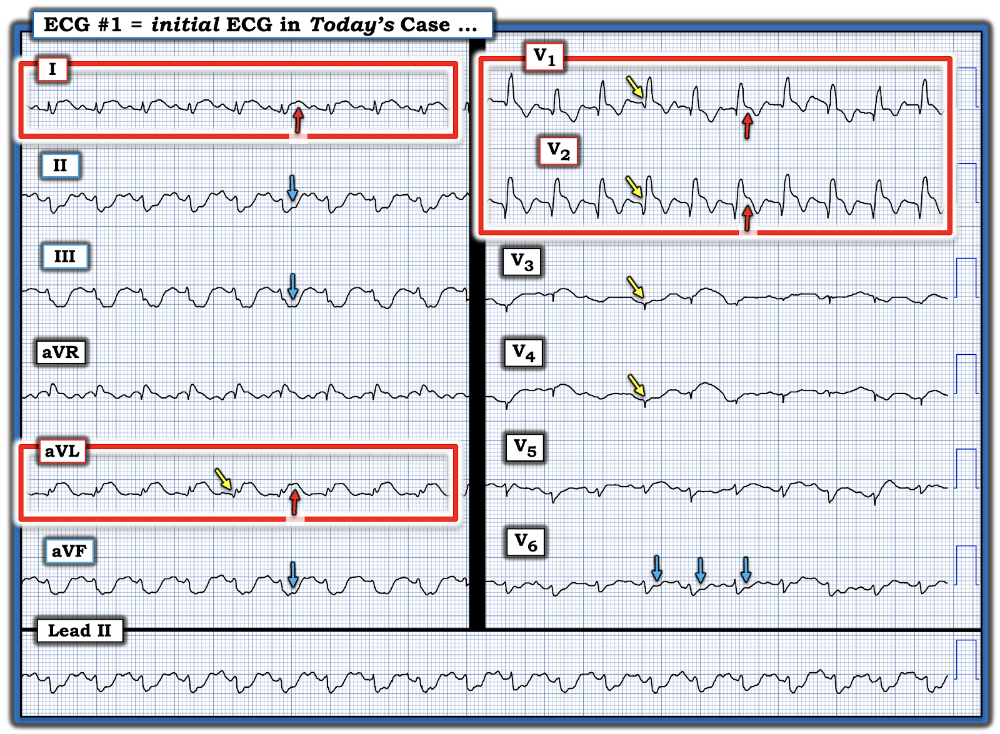
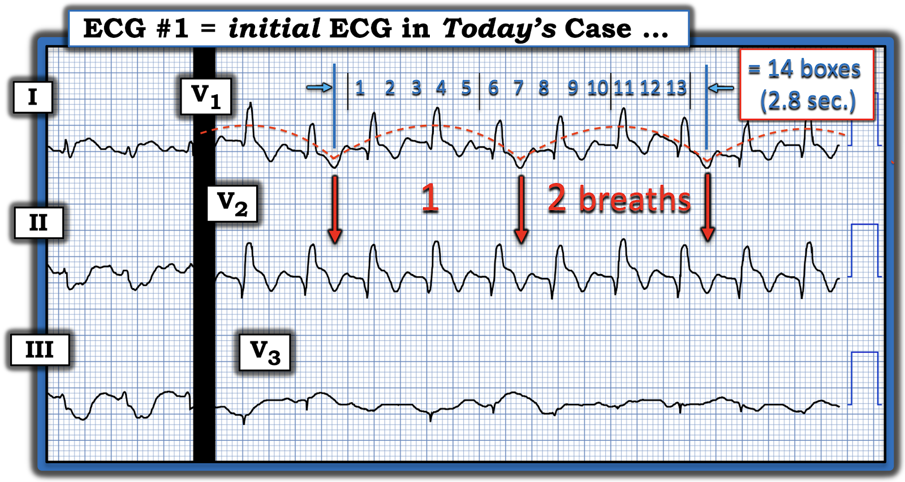
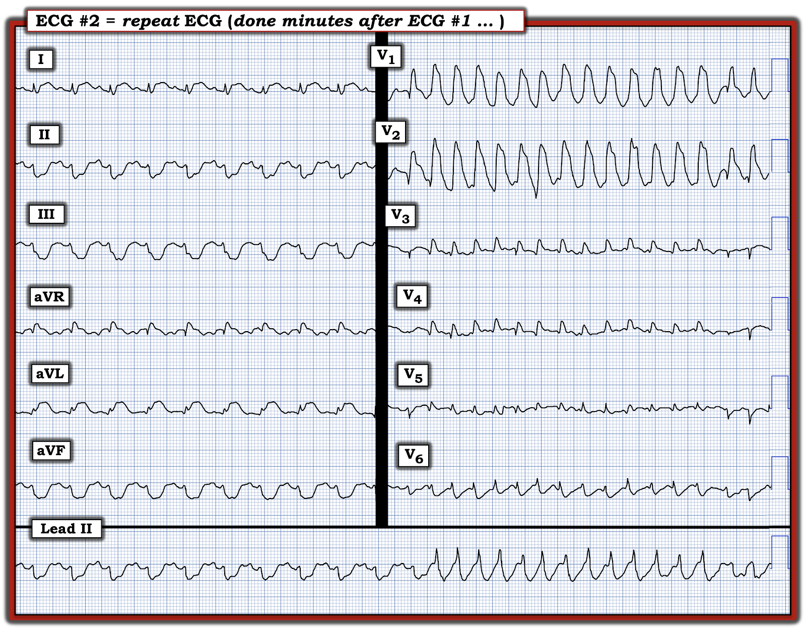
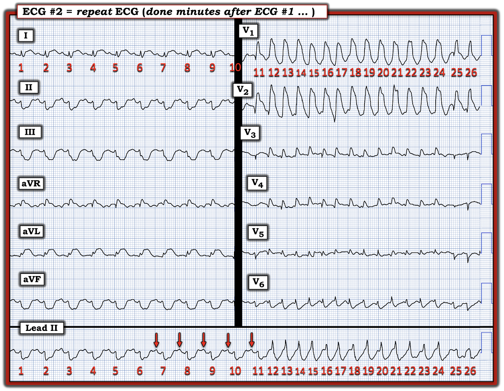

ECG Blog #513 — Chấn thương và còn gì nữa?
Điện tâm đồ ở Hình 1 được ghi từ một phụ nữ trung niên trước đó khỏe mạnh, bị một tai nạn MVA nghiêm trọng (tai nạn xe cơ giới — Motor Vehicle Accident). Bệnh nhân đang được hồi sức theo phác đồ chấn thương — và ổn định huyết động vào thời điểm ghi bản ghi này.
CÂU HỎI:
- Với bối cảnh lâm sàng nêu trên — Bạn sẽ diễn giải điện tâm đồ ở Hình 1 như thế nào?


Suy nghĩ của tôi về Hình 1:
Với tiền sử bị một tai nạn MVA nghiêm trọng — tôi lập tức nghĩ tới đụng dập tim (cardiac contusion) như một yếu tố góp phần gây ra điện tâm đồ bất thường ở Hình 1.
- Nhịp là một nhịp nhanh QRS rộng đều (Wide-Complex Tachycardia — WCT) với tần số ~130/phút. Tôi nghi ngờ rằng các sóng dương đều đặn đi trước mỗi phức bộ QRS ở chuyển đạo II là sóng P xoang (các mũi tên ĐỎ nét đứt ở chuyển đạo này trong Hình 2).
- Việc thấy các sóng dương tương tự đi trước mỗi phức bộ QRS ở chuyển đạo I lân cận vào cùng thời điểm — ủng hộ khả năng nhịp là nhịp nhanh xoang.
- Tuy vậy, do tần số nhanh và có những sóng nhỏ dường như tạo khía trên đoạn ST ở chính giữa các mũi tên ĐỎ ở chuyển đạo II (các mũi tên XANH nét đứt trong Hình 2) — tôi không thể loại trừ khả năng có hoạt động nhĩ 2:1, như có thể gặp trong cuồng nhĩ. Tôi cũng không thấy rõ sóng P xoang ở chuyển đạo V1 hay V2, như tôi vẫn mong đợi khi có nhịp nhanh xoang.
Như đã nêu — QRS trông rộng.
- Xin nhấn mạnh: Hình dạng QRS phù hợp với RBBB (blốc nhánh phải — Right Bundle Branch Block) — dựa vào dạng qR ở chuyển đạo V1 — cùng với sóng S tận rộng ở các chuyển đạo bên I và V6.
- Do đó, ít nhất thì — nhịp nhanh QRS rộng đều này gần như chắc chắn có nguồn gốc trên thất. Tôi không thể loại trừ hoàn toàn khả năng dẫn truyền 2:1 — nhưng rất nghi ngờ rằng nhịp thực sự là nhịp nhanh xoang (tức là, Tiền sử tai nạn MVA gây chấn thương chắc chắn phù hợp với nhịp nhanh xoang — mà không cần giả định một dạng loạn nhịp nhanh nào khác).
- ĐIỂM THEN CHỐT (PEARL) #1: Khi chúng ta nghi ngờ một nguyên nhân nào đó cho nhịp (như tôi nghi ngờ nhịp nhanh xoang cho nhịp ở Hình 2) nhưng chưa chắc chắn 100% về chẩn đoán đó — tốt nhất là khoan đưa ra kết luận cuối cùng cho đến khi chúng ta có thể đạt gần mức chắc chắn 100%.
- Trên thực tế — xử trí ban đầu đối với bệnh nhân hôm nay sẽ không khác nhau dù đó là nhịp nhanh xoang, ATach hay AFlutter (tức là, Trong cả 3 tình huống — Chúng ta sẽ tiếp tục các phác đồ đánh giá và điều trị chấn thương cho tới khi đánh giá rõ hơn mức độ tổn thương của bệnh nhân này). Và, nếu nhịp đúng là nhịp nhanh xoang — tần số tim gần như chắc chắn sẽ giảm khi bù dịch hồi sức và áp dụng các biện pháp điều trị khác.


Chúng ta còn thấy gì khác trên điện tâm đồ ban đầu của ca hôm nay?
Có nhiều dấu hiệu khác đáng lo ngại trên điện tâm đồ ban đầu của ca hôm nay — mà tôi đã làm nổi bật trong Hình 3:
- Có điện thế thấp cực độ ở 10/12 chuyển đạo (tức là, ở tất cả các chuyển đạo trừ V1,V2 — trong đó lý do sóng R có thể cao như vậy ở V1,V2 — có thể chỉ đơn giản phản ánh sự khử cực muộn và độc lập của thất phải, như xảy ra về mặt sinh lý khi có RBBB).
- ĐIỂM THEN CHỐT (PEARL) #2: Như đã đề cập trong ECG Blog #272 — trong số các nguyên nhân gây điện thế thấp có cung lượng tim thấp, như có thể xảy ra do một nhồi máu cơ tim diện rộng (hoặc trong ca hôm nay, do hậu quả của một tình trạng nặng — đụng dập tim).
- Cũng có những bất thường QRST lan tỏa thấy được ở gần như mọi chuyển đạo trên bản ghi này.
Về Thay đổi sóng Q-R-S-T:
- Sóng Q — có mặt ở nhiều chuyển đạo ( = 5 mũi tên VÀNG trong Hình 3). Bao gồm chuyển đạo V1,V2 (tức là, mất sóng r dương ban đầu vốn bình thường phải thấy ở các chuyển đạo này khi có RBBB) — ở các chuyển đạo V3,V4 lân cận (Ngoài điện thế rất nhỏ ở các chuyển đạo này — còn không có bất kỳ sóng r dương ban đầu nào) — và ở chuyển đạo aVL (có sóng Q tương đối lớn so với kích thước rất nhỏ của QRS).
- Tăng tiến sóng R — bị thay đổi do sóng R cao ở V1,V2 vì RBBB — nhưng sau đó nổi bật bởi sự mất biên độ sóng R, với vùng chuyển tiếp không bao giờ xuất hiện (tức là, biên độ sóng R vẫn nhỏ hơn độ sâu sóng S trên khắp các chuyển đạo trước tim, kéo dài tới tận V6).
Về
Thay đổi sóng ST-T:
- Có ST chênh lên rõ rệt ở chuyển đạo I và aVL (trong các hình chữ nhật ĐỎ ở các chuyển đạo này trong Hình 3). ST chênh xuống soi gương rõ rệt tương đương thấy ở từng chuyển đạo dưới (các mũi tên XANH ở các chuyển đạo này).
- ST chênh lên rõ rệt cũng thấy ở chuyển đạo aVR.
- Xin nhấn mạnh: Xét kích thước biên độ QRS rất nhỏ ở các chuyển đạo chi — mức lệch đoạn ST tương đối (chênh lên và chênh xuống) là cực lớn.
Thay đổi ST-T ở các chuyển đạo trước tim kín đáo hơn:
- Bình thường khi có RBBB — sóng ST-T sẽ có hướng ngược với sóng R tận dương. Thay vào đó, có ST chênh lên kín đáo-nhưng-có-ý-nghĩa ở chuyển đạo V1 – với ST chênh lên rõ rệt hơn ở chuyển đạo V2 (trong hình chữ nhật ĐỎ ở các chuyển đạo này).
- Đường nền không ổn định khiến việc đánh giá thay đổi ST-T ở các chuyển đạo V3,V4,V5 khó khăn hơn. Nhưng đặc biệt khi xét kích thước QRS rất nhỏ ở chuyển đạo V6 — có ST chênh xuống đáng kể ở chuyển đạo này (các mũi tên XANH ở chuyển đạo V6).
Nhận định về điện tâm đồ #1: Nếu bệnh sử đi kèm bản ghi này là đau ngực mới xuất hiện — nhận định của chúng ta sẽ là một STEMI diện rộng đang diễn ra, với nhịp nhanh, sóng Q đang hình thành ở nhiều chuyển đạo, RBBB và điện thế thấp rõ rệt — tất cả đều gợi ý sốc tim.
- Với bệnh sử bị một tai nạn MVA nghiêm trọng — tất cả các dấu hiệu điện tâm đồ này đều có thể được giải thích bởi chấn thương liên quan đến tai nạn MVA gây Đụng dập tim.
- Và/hoặc — chấn thương và stress do tai nạn cũng có thể đã thúc đẩy hoặc một nhồi máu cơ tim cấp và/hoặc bệnh cơ tim do stress (Stress Cardiomyopathy) (điều này sẽ phù hợp với hình ảnh có vẻ là QTc kéo dài).
- ST chênh lên ở chuyển đạo aVR, đi kèm ST chênh xuống rõ rệt ở các chuyển đạo dưới và ST chênh xuống ở chuyển đạo V6 — có thể phản ánh DSI (thiếu máu cục bộ dưới nội tâm mạc lan tỏa — Diffuse Subendocardial Ischemia). DSI không phải là một dấu hiệu bất ngờ với tần số tim nhanh và hình ảnh tổn thương cơ tim lan tỏa thấy trên điện tâm đồ ban đầu của ca hôm nay (Xem ECG Blog #483 — để biết thêm về DSI).


================================
Các dấu hiệu điện tâm đồ của Đụng dập tim là gì?
Nhìn chung — điện tâm đồ có độ nhạy chưa tối ưu trong phát hiện tổn thương tim sau chấn thương kín. Lý do là vị trí giải phẫu ở phía trước của RV (thất phải — Right Ventricle), cùng với việc nằm sát ngay xương ức — khiến RV dễ bị tổn thương do chấn thương kín hơn nhiều so với LV. Nhưng vì khối lượng điện học của LV lớn hơn nhiều — hoạt động điện (và do đó cả các bất thường điện tâm đồ) từ RV nhỏ và mỏng hơn nhiều đôi khi có thể khó phát hiện hơn.
ĐIỂM THEN CHỐT (PEARL) #3: Về các dấu hiệu điện tâm đồ trong Đụng dập tim (dựa trên các nguồn sau — Sybrandy và cs.: Heart 89:485-489, 2003 — Alborzi và cs.: J The Univ Heart Ctr 11:49-54, 2016 — và Valle-Alonso và cs.: Rev Med Hosp Gen Méx 81:41-46, 2018) — tôi nhận thấy các dấu hiệu điện tâm đồ sau đây là được báo cáo thường gặp nhất.
- Không có gì (tức là, Điện tâm đồ có thể bình thường — vì vậy việc không thấy bất thường điện tâm đồ nào không loại trừ khả năng đụng dập tim).
- Nhịp nhanh xoang (thường gặp ở bất kỳ bệnh nhân chấn thương nào … ).
- Các loạn nhịp khác (PAC, PVC, AFib, nhịp chậm và các rối loạn dẫn truyền AV — VT/VFib có khả năng gây tử vong).
- RBBB (là rối loạn dẫn truyền thường gặp nhất, vượt xa các rối loạn khác — do vị trí giải phẫu dễ bị tổn thương hơn của RV). Blốc phân nhánh và LBBB ít gặp hơn.
- Dấu hiệu tổn thương cơ tim (tức là, sóng Q, ST chênh lên và/hoặc chênh xuống — với các dấu hiệu này gợi ý có tổn thương LV).
- QTc kéo dài (với QTc trông "dài" ở Hình 3 — dù khó xác định chính xác QTc hơn nhiều trên điện tâm đồ ban đầu của ca hôm nay do có nhịp nhanh).
Các điểm quan trọng bổ sung:
- Tiên đoán “mức độ nặng” của đụng dập tim dựa vào loạn nhịp tim và các dấu hiệu điện tâm đồ khác — là một khoa học chưa hoàn hảo.
- Mặc dù tổn thương chủ yếu ở RV (hơn là LV) — việc dùng chuyển đạo V4R bên phải chưa được chứng minh là có ích (so với dùng điện tâm đồ 12 chuyển đạo chuẩn để phát hiện các bất thường điện tâm đồ).
- Ngoài các bất thường điện tâm đồ liên quan đến chính chấn thương kín gây đụng dập tim — Hãy nhớ khả năng có các dạng tổn thương tim khác ở những bệnh nhân này (tức là, tổn thương van tim, bóc tách động mạch chủ, vỡ vách) — cũng như khả năng có một biến cố tim nguyên phát (tức là, nhồi máu cơ tim cấp có thể chính là nguyên nhân gây ra tai nạn dẫn tới chấn thương).
- Các bất thường điện tâm đồ có thể xuất hiện muộn — vì vậy ghi lại điện tâm đồ nếu bản ghi thứ 1 bình thường là phù hợp khi lo ngại có chấn thương nặng.
- "Tin tốt" về đánh giá nguy cơ khi nghi ngờ đụng dập tim đi kèm chấn thương cấp — NẾU troponin bình thường lúc 4-6 giờ và NẾU điện tâm đồ bình thường — thì nguy cơ xảy ra biến chứng tim là cực kỳ thấp.
Điều cốt lõi về CA BỆNH hôm nay:
Với nhiều bất thường điện tâm đồ được mô tả ở trên trên điện tâm đồ ban đầu của ca hôm nay — tổn thương tim đáng kể là rõ ràng. Liệu đây có hoàn toàn là hậu quả của đụng dập tim và/hoặc liệu có cả nhồi máu cơ tim cấp tham gia hay không — thì sẽ không thể biết được chỉ dựa vào việc xem điện tâm đồ ban đầu.
================================
ĐIỂM THEN CHỐT (PEARL) #4: Một dấu hiệu điện tâm đồ thường bị bỏ qua ...
Chúng ta thường không nghĩ tới điện tâm đồ như một cách để ước tính tần số thở của bệnh nhân. Tuy vậy — biết rằng đôi khi chúng ta có thể ước tính bệnh nhân đang thở nhanh đến mức nào đôi lúc có thể cực kỳ hữu ích.
- Điều này đặc biệt đúng khi được giao đọc điện tâm đồ của một bệnh nhân mà ta chưa khám. Ví dụ — dấu hiệu gợi ý thở nhanh trên điện tâm đồ có thể giúp ta nhận ra một bệnh nhân đang khó thở cần được khám ngay lập tức.
Hãy xem Hình 4 — trong đó tôi đã phóng to các chuyển đạo V1,V2,V3 từ điện tâm đồ ban đầu của ca hôm nay.
- Lưu ý sự lên-xuống nhịp nhàng của đường nền, cứ mỗi 3 phức bộ QRS lại thấy một lần.
- Khi bạn thấy đường nền lên xuống nhất quán theo một khoảng cố định trên phần lớn bản ghi 12 chuyển đạo — điều này nhiều khả năng phản ánh tần số thở của bệnh nhân (cần phân biệt với tình trạng đường nền dao động ngẫu nhiên thường gặp hơn nhiều — mà từ đó không thể đánh giá chính xác tần số thở của bệnh nhân).
- Trong Hình 4 — thấy 2 nhịp thở diễn ra trong khoảng thời gian 2.8 giây (tức là, trong khoảng 14 ô lớn). Điều này có nghĩa là 1 nhịp thở diễn ra trong 1.4 giây — và 60 giây/phút ÷ 1.4 giây = thở nhanh với tần số thở khoảng ~43/phút (điều này không đáng ngạc nhiên vì điện tâm đồ ban đầu gợi ý bệnh nhân này đang bị sốc).


================================
CA BỆNH hôm nay TIẾP DIỄN:
Bệnh nhân được hồi sức theo phác đồ chấn thương:
- Các chấn thương cơ xương được điều trị.
- Bệnh nhân được truyền các chế phẩm máu.
- Bệnh nhân được đặt nội khí quản để bảo đảm đường thở — sau đó được bù dịch hồi sức thêm và an thần.
- Điện giải đồ huyết thanh bình thường.
- Siêu âm tim tại giường gợi ý vô động vùng trước bên (phù hợp với điện thế rất thấp và phân bố giải phẫu của sóng Q và ST chênh lên).
Vài phút sau — bệnh nhân xuất hiện nhịp như trong Hình 5.
- CÂU HỎI: Điều gì đã xảy ra?


================================
SUY NGHĨ CỦA TÔI về điện tâm đồ ở Hình 5:
Tổng cộng có 26 nhát thấy trên điện tâm đồ #2 — với 9 nhát đầu tiên xuất hiện ở các chuyển đạo chi.
- Các chuyển đạo chi cho thấy ít thay đổi so với điện tâm đồ #1 — với nhịp nhanh xoang lại được gợi ý là nhịp nền (ở cùng tần số rất nhanh ~130/phút). Một lần nữa ta thấy điện thế rất thấp — với mức ST chênh lên tương tự ở các chuyển đạo I,aVL và ST chênh xuống soi gương ở các chuyển đạo dưới.
- Nhát #10 bị che khuất một phần bởi đường ranh giới chuyển đổi chuyển đạo.
- Nhát #11 là nhát hoàn chỉnh đầu tiên thấy ở các chuyển đạo trước tim. Nhát này có cùng hình dạng RBBB (với sóng Q ban đầu và ST chênh lên tương tự ở các chuyển đạo V1,V2). Nhìn xuống nhát #11 xảy ra đồng thời trên dải nhịp chuyển đạo II dài (ở cuối bản ghi) — ta có thể thấy rằng nhát #11 là nhát dẫn truyền từ xoang (mũi tên ĐỎ đi trước nhát #11 trên dải nhịp chuyển đạo II dài).
- Lưu ý rằng sóng P biến mất trên chuyển đạo II dài sau nhát #11.
- Chuyển sự chú ý sang chuyển đạo V1 — một loạt 13 nhát của một nhịp nhanh QRS rộng trông rất khác bắt đầu từ nhát #12. Tần số của nhịp nhanh QRS rộng gần như đều này là trên 200/phút. Hình dạng QRS rất rộng và không định hình ở các chuyển đạo V1 và V2, cùng với sự thay đổi rõ rệt hình dạng QRS trong loạt 13 nhát này ở các chuyển đạo V3,V4,V5 gần như chẩn đoán xác định VT (nhịp nhanh thất — Ventricular Tachycardia).
- Hình dạng QRS gần như trở về bình thường ở 2 nhát cuối cùng của bản ghi này ( = nhát #25,26) — gợi ý rằng loạt VT có thể đang kết thúc (dù chúng ta không được biết điều gì xảy ra sau nhát #26).


================================
DIỄN TIẾN CỦA CA BỆNH:
Bệnh nhân có vài cơn NSVT (nhịp nhanh thất không bền bỉ — Non-Sustained VT ).
- Trong những ngày tiếp theo — tình trạng bệnh nhân ổn định. Các cơn VT chấm dứt. Bệnh nhân vẫn phải thở máy. Siêu âm tim ghi nhận EF ~25-30%.
- Đáng tiếc — tôi không có thông tin theo dõi lâu dài của ca này. Các cơn NSVT và phân suất tống máu thấp không có gì bất ngờ với chẩn đoán đụng dập tim nặng, đi kèm các bất thường điện tâm đồ lan tỏa thấy ở Hình 3.
- Tuy vậy — việc tình trạng bệnh nhân này dường như đã ổn định và liên tục cải thiện sau vài ngày nằm hồi sức tích cực là dấu hiệu tốt cho khả năng hồi phục của bệnh nhân.
==================================
Lời cảm ơn: Xin cảm ơn Mehul K (từ Delhi, Ấn Độ) đã gửi ca bệnh hôm nay.
==================================